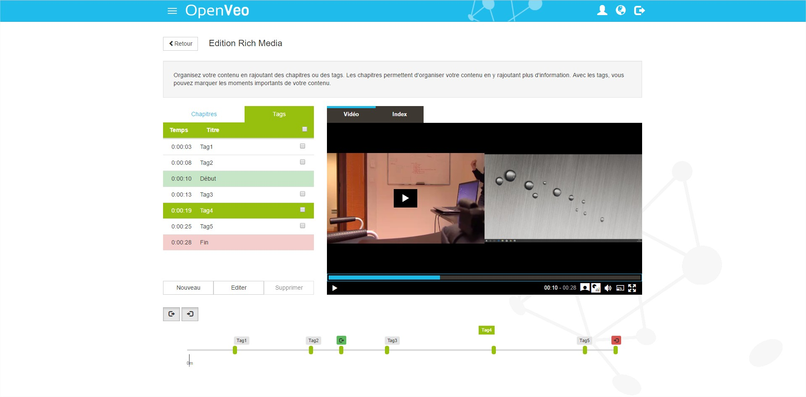

What's OpenVeo Publish?
OpenVeo Publish is an OpenVeo plugin.
OpenVeo Publish adds the following features:
- The possibility to upload videos on:
- The possibility to manage synchronized multi-sources videos
- Back end pages:
- A page to manage the list of videos
- A page to create and organize video categories
- A page to create new video properties
- A page to edit the media (cut, chapters, tags)
- A page to configure the plugin
- A public page to play a video with images synchronization, chapters and tags
Screenshots
Back end catalogue

Back end media editor

Back end categories

Back end video properties

Public video with images synchronization